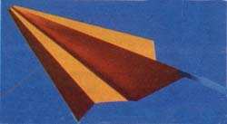
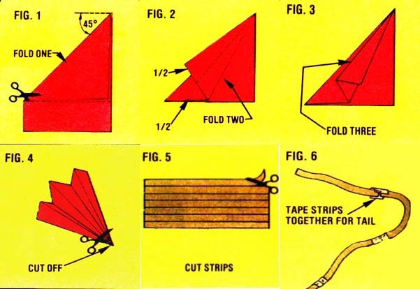
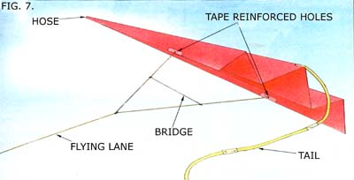

The phrase "it flies like a bird" has lost a lot of its impact through overuse, but this low-cost, do-it-yourself wind rider can restore some meaning to the old cliche - because it actually does "flap its wings" as it adjusts to differing air currents. And the airborne performer is decidedly low-tech. In fact, to make one, you'll need only a sheet of 8 1/2-by-11-inch paper, a few bits of tape, some thread, scissors, a pencil, a straightedge and a needle. If you return the spool of thread to your sewing basket after the flight is over, the total cost of expended materials really should be less than one cent. And if you use already-written-on paper, the cost will be lower still.
Begin the undertaking by folding the kite-to-be over upon itself and trimming off the bottom border to produce a square sheet that's creased on the diagonal, as in Fig. 1 in the Image Gallery (save the cutaway strip to make the kite's tail). Then fold each flap of the resulting triangle twice, "accordion pleat" style, as shown in Figs. 2 and 3 - so that three folds align on the long top side, and the two bottom creases are even with the paper's edges along the shorter side. (You may have to experiment a bit, but you'll find the process familiar if you ever made paper airplanes in study hall!) To complete the body of the kite, cut off a bit of the point where all of the creases converge (as illustrated in Fig. 4).
That done, take the leftover ribbon of paper and cut it into eight or ten strips of equal width (Fig. 5), fasten the bands together end to end using 3/8-inch-long pieces of tape (Fig. 6), and tape the tail securely to the rear of the aircraft. You can now mark, on each outer edge of the kite, a point about three-quarters of the way from the nose to the back corner. Reinforce the marked spots with 1/2-inch-long pieces of tape, then punch holes (one at each point) through both the tape and the paper.
The next step will be to take a two-foot length of thread and knot its ends through the two holes on the edges of the kite. Once that's done, you have only to tie a spool of thread, which will serve as your "flying line," to the center of the just-attached bridle loop, and the finished kite should look like the drawing in Fig. 7. Then slip a pencil or a stick through the hole in the spool to make handles, and head outdoors to try your creation's wings.
Choose an open field - well away from any powerlines (never use any kind of metallic flying string) - and on a day when the wind is just strong enough to make tree leaves dance and small branches sway ever so gently, hold the kite over your head and let the breeze take it. If the aircraft seems to veer off to one side, the bridle on that edge is likely too short and will need adjustment. If the flier simply spins round and round, however, the wind is probably too strong. Should the kite be hampered by a temporary gust, you can sometimes save the flight by walking with the wind for a moment to end the spin, by adding to the tail, or - as a last resort - moving the bridle attachment point an inch or two closer to the kite's nose.
On the other hand, if you find there's not enough breeze to lift your plaything from your hand, you might be able to "tow" it up into windier air by running with the string as you would with a larger kite.
Once your day's flying is through, reel the toy in carefully - walking with the breeze as necessary and taking in line between gusts - to bring your kite to hand like a master flier!
One final "note," these little wind-dancers are small enough to mail to friends! Why not fold up a few and send them out with bridles attached as a whole new form of "air mail"?
|
 MOTHER EARTH NEWS STAFF The Penny Kite, also called the "one-cent plane." |
 MOTHER EARTH NEWS STAFF Folding and construction diagram for making a penny kite. |
 MOTHER EARTH NEWS STAFF Diagram of the finished penny kite, complete with labels of its various physical parts. |